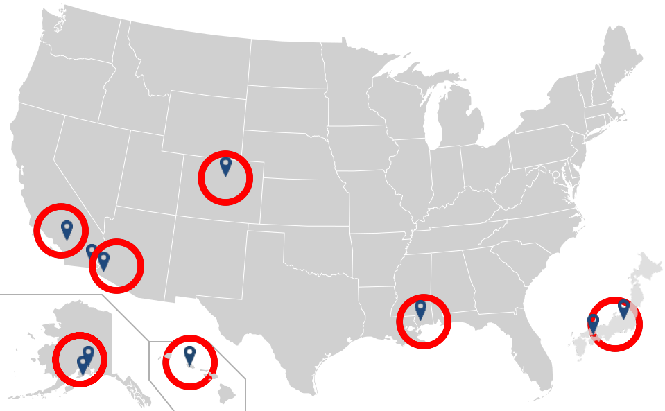
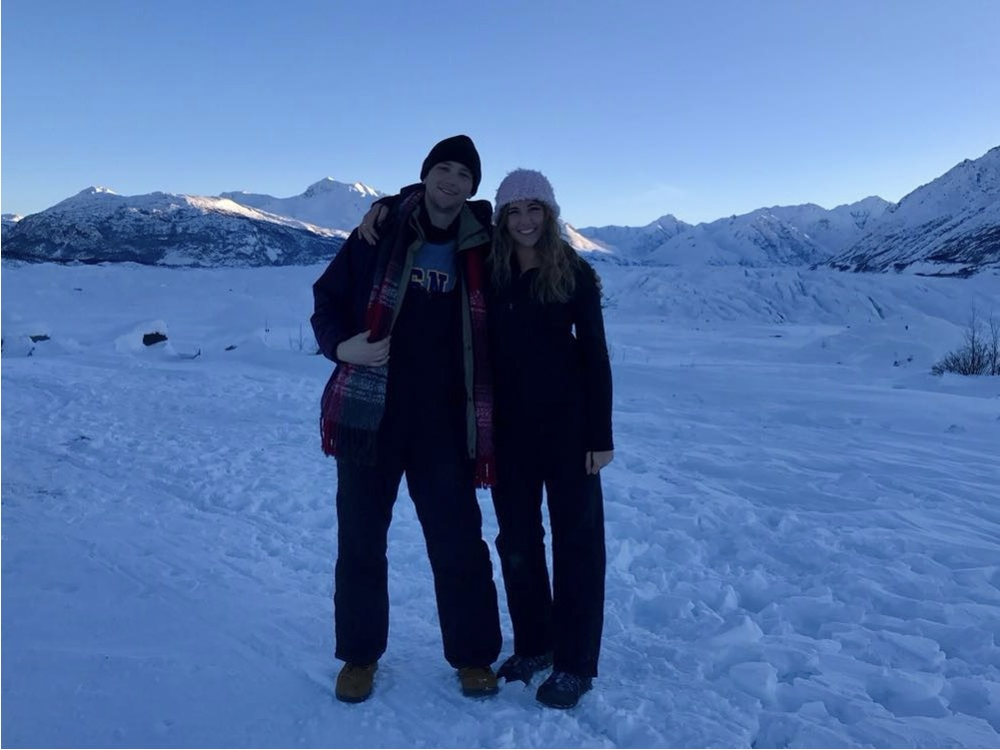
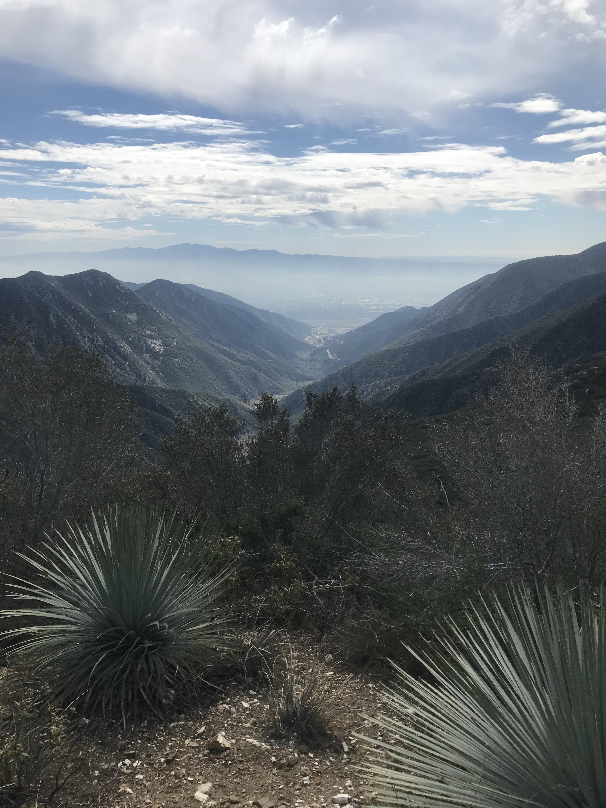
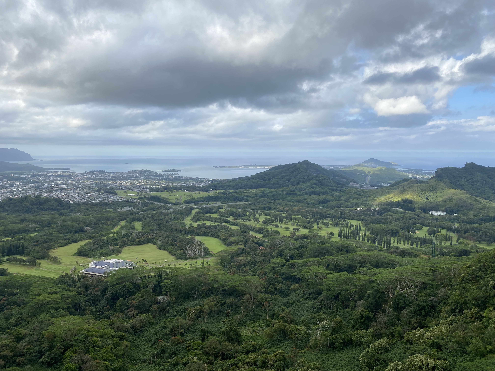
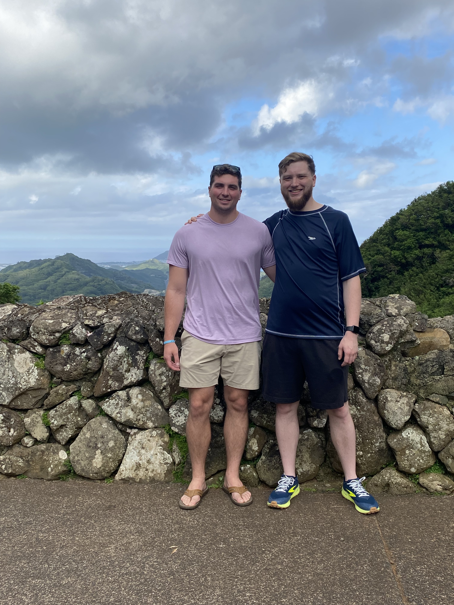
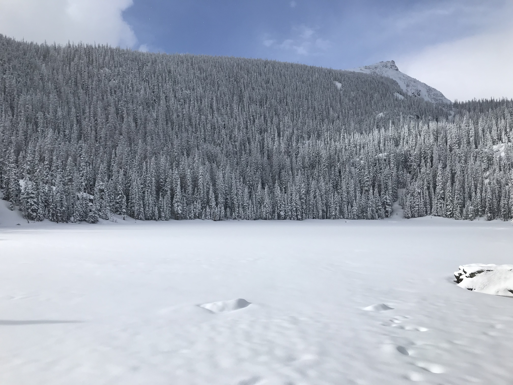
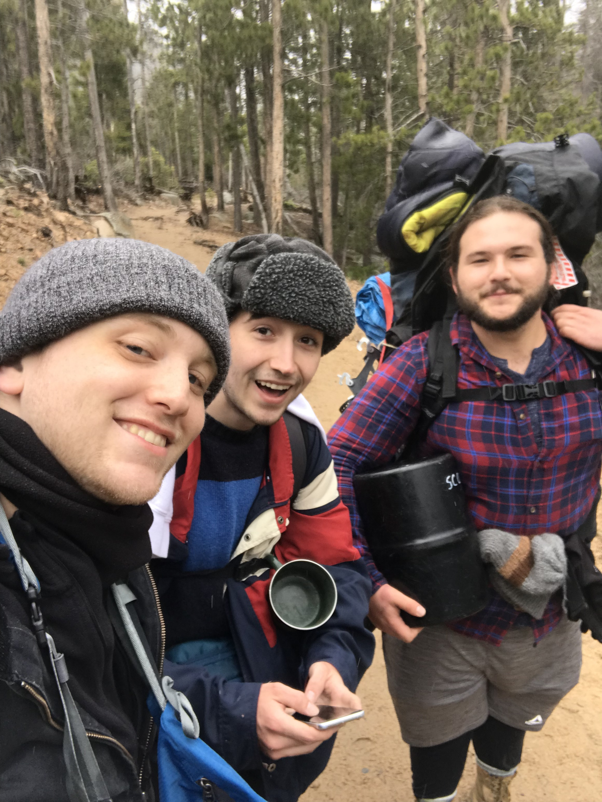
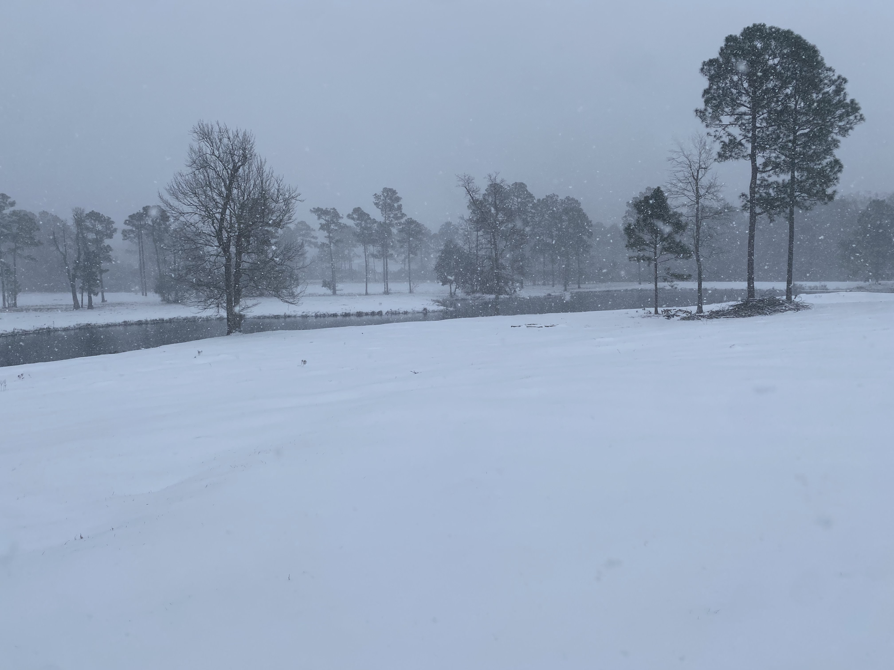
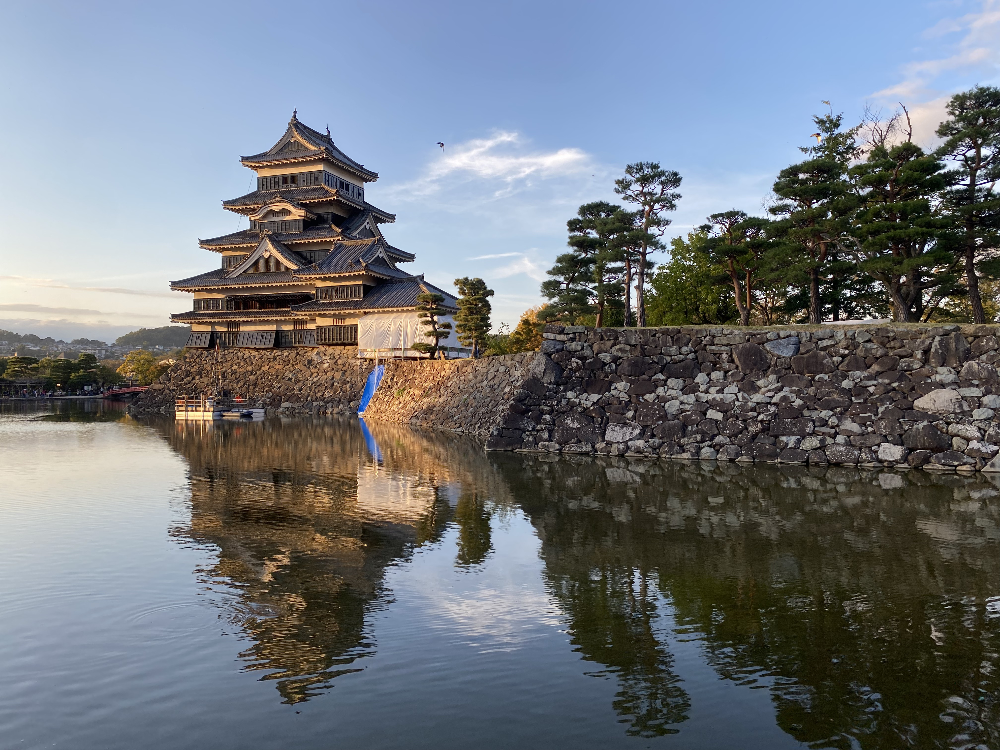
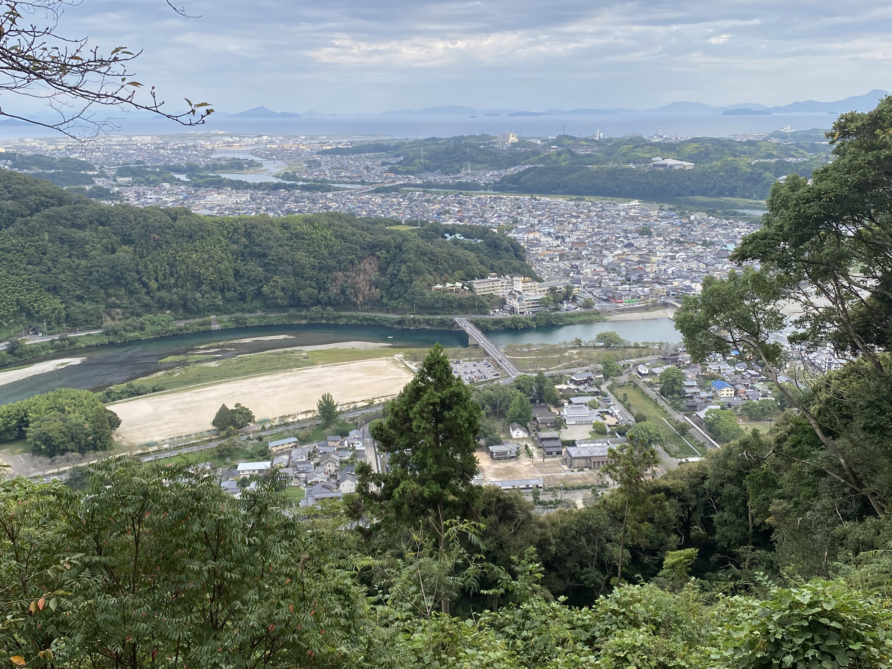

My Travels
Pick a circle on the map to see some photos I took in that state!
ALASKA
Portage 2019
Hanging out on a glacier near Portage with my sister!

Seward 2019
Walking around the Lowell Point Black Sand Beach in Seward.
CALIFORNIA
San Gabriel Mountains 2020
Amazing view from the peak of Mt. Baldy in the San Gabriel Mountains.

Imperial County 2020
Hanging out in the Imperial Sand Dunes.
HAWAII
O'ahu 2023
Tropical views from Pali Lookout in O'ahu.
O'ahu 2023
Taking a pic with my brother Officer Toms at Pali Lookout.
ARIZONA

Yuma 2022
Made a challenging hike up Jester's trail in the Gila Mountains. Worth the view!
COLORADO
Rocky Mountain National Park 2018
Hiked up the Fern Lake Trail in Rocky Mountain National Park and camped through a blizzard next to this alpine lake.
Rocky Mountain National Park 2018
Hiking with the boys on the Fern Lake trail. We had the whole place to ourselves because of the incoming blizzard!
MISSISSIPPI
Kiln 2024
Typical winter day in South Mississippi.
JAPAN
Matsumoto 2024
Beautiful afternoon view of Matsumoto Castle in the Nagano mountain region of Japan.
Iwakuni 2024
A moment to take in the scenery after hiking up to Iwakuni Castle in Iwakuni.